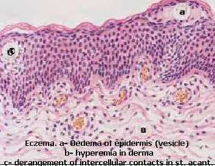
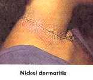
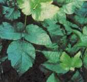
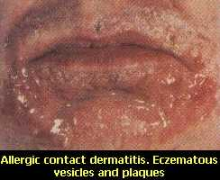

CONTACT HYPERSENSITIVITY
A clinical manifestation of contact hypersensitivity is the allergic contact dermatitis (in classic texts – acute eczematous dermatitis). The clinical term “eczematous” is not precise and needs some pathophysiological commentary. Any type of skin inflammation, characterized by papulovesicular rash, oozing and crusts, later progressing into raised scaling papules may be called in clinics “eczema”. But, the pathogenetic mechanisms, staying behind these bright symptoms, may be entirely different. In some patients it is anaphylaxis. In this case lesion does not require prolonged antecedent exposure and, as a rule, is observed in individuals with family and personal history of atopic disorders. This condition is designated in pathology as “atopic dermatitis” (see above) and belongs to ITH.
In true contact dermatitis the mechanism is of delayed type. The lesion occurs after antecedent topical exposure of an allergen, without history of atopy. The anaphylactoid symptoms in this case are secondary to DTH mechanism.
Anyway, allergic contact dermatitis has all the signs of skin lesion, previously traditionally called “eczema”. Pathohistologically it is spongiotic dermatitis, with edema of epidermis. Hence, there is a papulovesicular rash. The allergen in contact dermatitis persists within epidermis.



Etiology of contact dermatitis is versatile. In Europe the most common agents are haptens: dinitrochlorobenzene (which sensitize nearly all contacting individuals), nickel, chromates, paraphenyiendiamine, mercury, some drugs, conservation agents, detergents, rubber ingredients. Quite typical case is to get this disease due to occupational hazard or as a result of prolonged skin irritation with watchstrap. In North America the leading causes are plantar allergens – poison ivy and poison oak. Again, as in case of anaphylaxis, we can appreciate, how important for the spectrum of diseases is a contact of migrants with exotic flora and fauna.
The mechanism of inflammation in contact allergic dermatitis is the following. In first contact the particles of allergen (hapten) with molecular weight less than 1kDa penetrates the epidermis and conjugates within it with normal skin proteins. Epidermal Langerhans’ cells capture allergen (hapten-carrier conjugate) within basal layer of epidermis and migrate to paracortical zones of regional lymph nodes. In lymph nodes these APC process and present allergen to CD+ lymphocytes of Th1 type in context of MHC II class glycoproteins. The specific clones of long living Th1 “memory” cells are formed. This process requires several days (up to 10). As soon as sensitization is completed, the allergen locally activates T-cells. The produced cytokines (IL-2, IL-3, GM-CSF, IL-12, IL-8, IL-12, IL-8, TNFa , and IFNg ) trigger and drive the local inflammation. Of special significance is the induction of cell adhesion molecules (ICAM-1) and MHC antigens on the surface of epidermal keratinocytes and dermal endothelium, which is controlled by last to autocoids. Lymphocytes and macrophages are attracted by cytokines to the focus of inflammation and settle in dermis and epidermis by means of their integrins (LFA-1) attachment to local ICAM-1 molecules. After 48 hours the reaction arrives to its acme, marked epidermal edema is produced and the rash looks like vesicular. After 72 hours anti-inflammatory mediators (e.g. PgE) render their effects – and clinical manifestation is gradually reversed.
NEXT CHAPTER OR